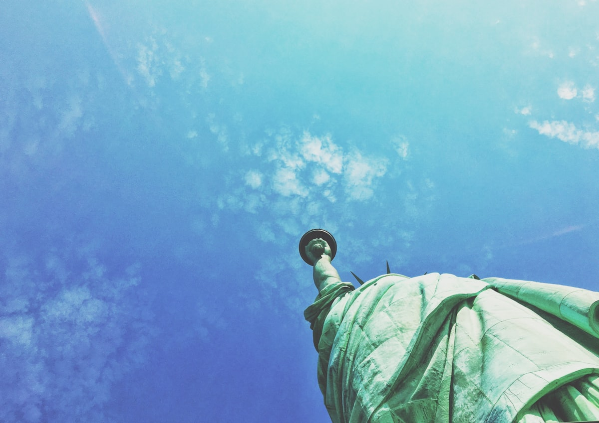
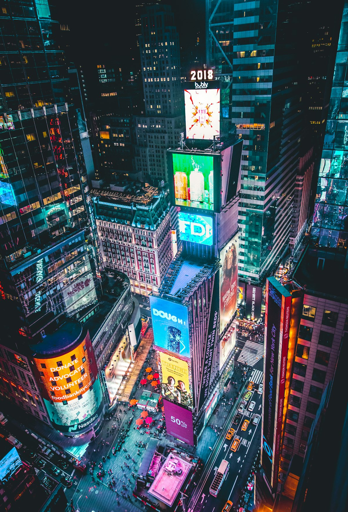
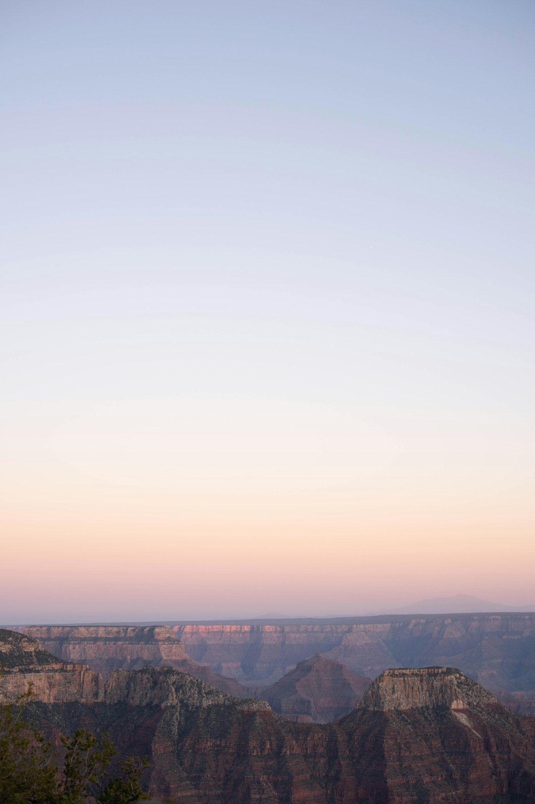
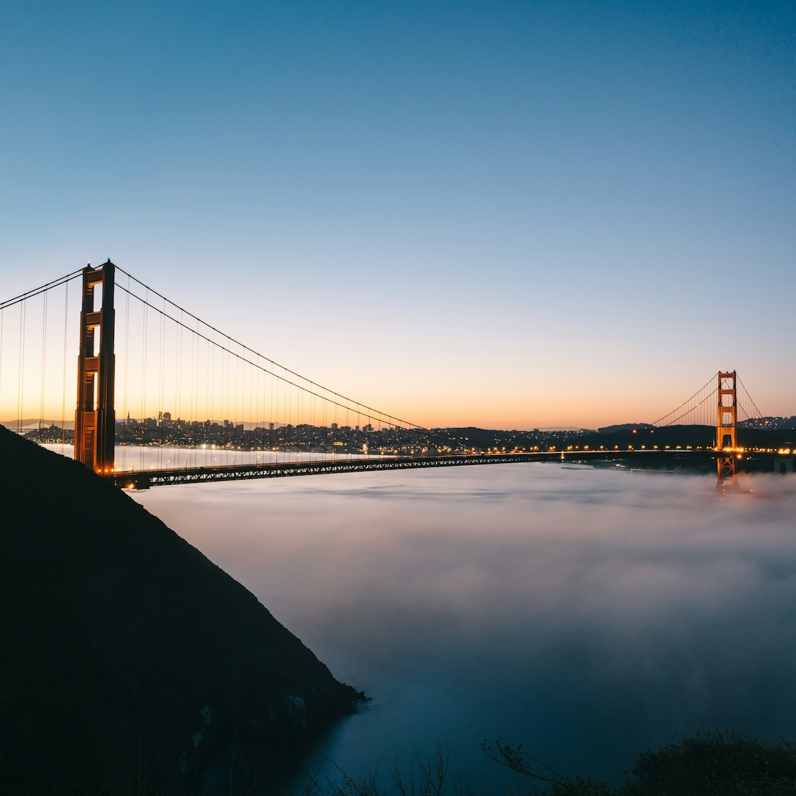
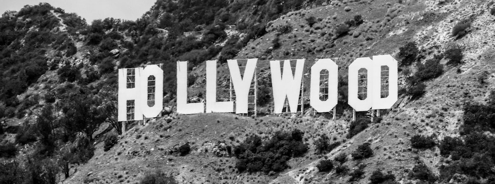
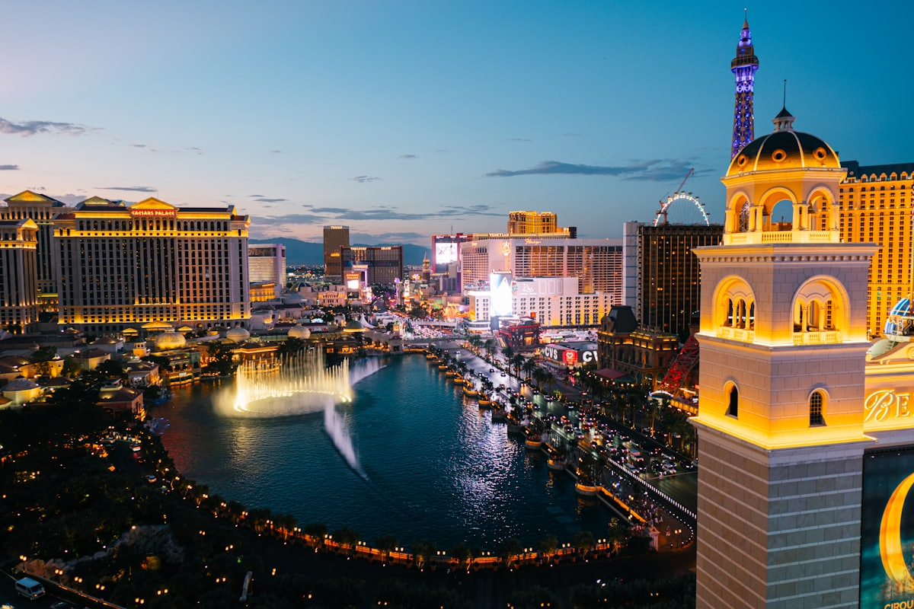
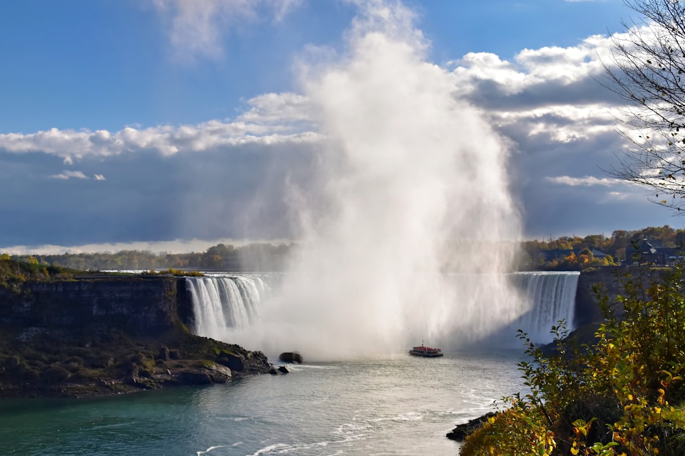
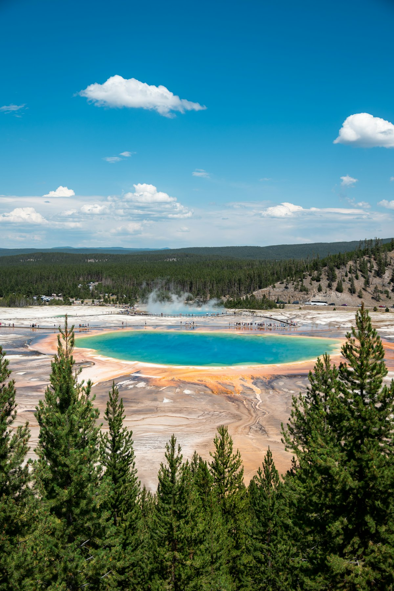

| 事项 | 结论 |
|---|---|
| 事项 | 结论 |
| 签证（最关键） | 美国 B1/B2 十年多次签证：需 DS-160 表 + 面签，出签后出发前 72h 内做 EVUS 登记（有效 2 年）；首次面签建议提前 2–3 个月 |
| 时差 | 美东（纽约/华盛顿）比北京慢 13h（夏令时 12h）；美西（洛杉矶/旧金山）慢 16h（夏令时 15h）；芝加哥/黄石居中 |
| 电源插座 | 美国 A/B 型（两/三扁脚），120V 60Hz；国内两扁脚充电器可直接用，三脚需转换 |
| 货币 | 美元 USD，1 美元 ≈ 7.2 元人民币；当地几乎全刷卡，现金备 200 美元应急 |
| 推荐方案 | 东岸 9 天（纽约→华盛顿→波士顿→尼亚加拉）+ 中西部 7 天（芝加哥→拉斯维加斯→大峡谷）+ 西岸 10 天（洛杉矶→旧金山→黄石）+ 4 天返程缓冲 |
| 返程约束 | 第 30 天从旧金山/盐湖城转机返京；跨太平洋航班旺季（6–8 月）提前 2 个月订 |
| 行程链 | 纽约 → 费城/华盛顿 → 波士顿 → 尼亚加拉 → 芝加哥 → 拉斯维加斯 → 大峡谷 → 洛杉矶 → 旧金山 → 黄石 |
| 预算（人均） | 经济 42000–55000 ／ 标准 65000–85000 ／ 舒适 110000–160000（人民币） |
| 三件提前事 | ① 办 B1/B2 签证+EVUS ② 订国内段机票（纽约→华盛顿等，提前 1 个月便宜）③ 黄石/大峡谷住宿提前 2–3 个月（国家公园内房源紧俏） |
| 季节提醒 | 5–6 月、9–10 月气候最佳；7–8 月炎热但黄石/大峡谷峡谷内早晚凉；12–2 月黄石雪大封路多，尼亚加拉可看冰瀑 |
| 支付与小费 | 几乎全程刷卡（Visa/Mastercard），现金备 200 美元应急；餐厅/打车/酒店需付 15–20% 小费（美国特色） |
以下为 30 天 29 晚的推荐节奏：东岸按「纽约→华盛顿→波士顿→尼亚加拉」推进，中西部飞芝加哥与拉斯维加斯，西岸自驾洛杉矶—旧金山，最后飞黄石收尾。每日主景点 ≤2 个，长途段用国内航班衔接。
| 日期 | 行程 | 过夜地 | 主题 |
|---|---|---|---|
| D1 抵纽约 | 北京✈纽约（直飞约 13–14h，倒时差 -12h），入住曼哈顿中城，傍晚时代广场灯光 | 纽约 | 抵达+预热 |
| D2 | 自由女神像+埃利斯岛（渡轮上岛）→ 华尔街铜牛 → 三一教堂 | 纽约 | 自由女神日 |
| D3 | 世贸中心遗址+One World 观景台 → 布鲁克林大桥步行 → 金融区 | 纽约 | 金融区一日 |
| D4 | 时代广场 → 中央公园（骑马/骑行）→ 大都会艺术博物馆（门票建议价） | 纽约 | 都市核心 |
| D5 | MoMA 现代艺术博物馆 → 第五大道 → 洛克菲勒中心顶 → 百老汇音乐剧 | 纽约 | 艺术与百老汇 |
| D6 | 纽约→费城（巴士/火车 2h）：独立宫+自由钟 → 黄昏抵华盛顿 | 华盛顿 | 移师费城 |
| D7 | 华盛顿国家广场一日：林肯纪念堂 → 反思池 → 华盛顿纪念碑 → 国会山外观 | 华盛顿 | 国家广场 |
| D8 | 白宫外观 → 史密森博物馆群（航空航天/自然历史免费）→ 潮汐湖樱花（春季） | 华盛顿 | 博物馆日 |
| D9 | 华盛顿→波士顿（火车约 7h 或飞 1.5h），傍晚昆西市场吃龙虾卷 | 波士顿 | 移师波士顿 |
| D10 | 波士顿自由之路：公园街教堂 → 老州议会 → 宪法号军舰 → 邦克山 | 波士顿 | 自由之路 |
| D11 | 哈佛大学+麻省理工（剑桥校区）→ 波士顿公共花园 → 后湾街拍 | 波士顿 | 名校日 |
| D12 | 波士顿→布法罗（飞约 1.5h）→ 尼亚加拉瀑布城，晚间瀑布灯光 | 尼亚加拉 | 飞往瀑布 |
| D13 | 尼亚加拉大瀑布：雾中少女号游船 → 风洞之旅 → 观景塔全景 | 尼亚加拉 | 瀑布全日 |
| D14 | 尼亚加拉→芝加哥（飞约 2h），傍晚千禧公园云门（大豆子） | 芝加哥 | 移师芝加哥 |
| D15 | 芝加哥：芝加哥河游船建筑之旅 → 密歇根湖滨 → 华丽一英里购物 | 芝加哥 | 建筑之都 |
| D16 | 芝加哥艺术博物馆（印象派馆藏）→ 威利斯大厦 103 层天空观景台 | 芝加哥 | 艺术与高空 |
| D17 | 芝加哥→拉斯维加斯（飞约 4h），傍晚长街霓虹夜景 | 拉斯维加斯 | 飞往赌城 |
| D18 | 拉斯维加斯：长街各主题酒店 → 百乐宫音乐喷泉 → 大转轮（High Roller） | 拉斯维加斯 | 赌城一日 |
| D19 | 拉斯维加斯→大峡谷南缘（自驾 4.5h），下午光明天使观景台看日落 | 大峡谷 | 自驾峡谷 |
| D20 | 大峡谷南缘日出 → 步道徒步（光明天使小径 1–2h）→ 直升机可选 | 大峡谷 | 峡谷全日 |
| D21 | 大峡谷→旗杆市→飞洛杉矶（经凤凰城转机），傍晚好莱坞星光大道 | 洛杉矶 | 飞往洛杉矶 |
| D22 | 洛杉矶：好莱坞标志 → 格里菲斯天文台 → 比弗利山庄 → 圣莫尼卡海滩日落 | 洛杉矶 | 好莱坞日 |
| D23 | 好莱坞环球影城全天（哈利波特/侏罗纪等），晚上圣费尔南多谷晚餐 | 洛杉矶 | 乐园日 |
| D24 | 洛杉矶：迪士尼乐园（可选）或 盖蒂中心+威尼斯海滩慢游 | 洛杉矶 | 乐园/艺术 |
| D25 | 洛杉矶→旧金山（一号公路自驾或飞 1.5h），傍晚渔人码头 | 旧金山 | 移师湾区 |
| D26 | 旧金山：金门大桥（最佳机位）→ 九曲花街 → 渔人码头+恶魔岛可选 | 旧金山 | 金门日 |
| D27 | 旧金山→硅谷：斯坦福大学 → 谷歌园区 → 苹果访客中心 → 返市区 | 旧金山 | 硅谷日 |
| D28 | 旧金山→博兹曼（飞约 2.5h）→ 西黄石，晚上野生动植物初见 | 黄石 | 飞往黄石 |
| D29 | 黄石国家公园：老忠实间歇泉 → 大棱镜温泉 → 黄石大峡谷瀑布 | 黄石 | 黄石地热 |
| D30 返程 | 黄石→博兹曼/盐湖城✈北京（转机约 20–24h），入境到家 | — | 收尾 |
以下为 30 天全程的逐小时执行时间线，可当作「当天打开照着走」的清单。标注 ※ 的可选项视体力与天气取舍。
| 时间 | 事项 |
|---|---|
| 09:00–21:00 | 北京✈纽约（直飞约 13–14h，跨国际日期变更线）。建议选 JFK/纽瓦克入境，机场快轨进曼哈顿 |
| 21:30–22:30 | 入住曼哈顿中城酒店，便利店买 MetroCard 地铁卡 |
| 22:30–00:30 | 时代广场（免费）：纽约夜生活的第一步，灯牌与街头艺人 |
| 00:30 | 回酒店休息，强制倒时差（与北京 -12h） |
| 时间 | 事项 |
|---|---|
| 08:00–08:30 | 炮台公园（Battery Park）乘 Statue Cruises 渡轮（往返约 25 美元，含自由女神岛+埃利斯岛） |
| 09:00–11:30 | 自由女神像：登岛环行+基座博物馆；登皇冠需提前 1 个月官网抢票（附加费） |
| 11:30–12:30 | 自由岛野餐/小卖部午餐 |
| 12:30–14:00 | 埃利斯岛移民博物馆（免费）：美国移民史第一站 |
| 14:30–17:00 | 返曼哈顿：华尔街铜牛（免费）+ 三一教堂（免费） |
| 18:00 | 晚餐：华尔街附近或回中城，早休息倒时差 |
| 时间 | 事项 |
|---|---|
| 08:30–11:00 | 911 纪念馆+世贸中心遗址（纪念馆成人约 33 美元）：双子塔倒映水池 |
| 11:00–12:30 | One World Trade Center 观景台（约 42 美元）：360° 看纽约全城 |
| 12:30–13:30 | 午餐：金融区餐车/牛排馆 |
| 14:00–16:00 | 布鲁克林大桥（免费）步行：从曼哈顿走到布鲁克林，看曼哈顿天际线 |
| 16:30–18:00 | 布鲁克林 DUMBO 区（网红机位）+ 返程 |
| 19:00 | 晚餐：中城牛排/意餐 |
| 时间 | 事项 |
|---|---|
| 08:30–10:00 | 时代广场（免费）：白天看 TOYS'R'US/迪士尼商店，人相对少 |
| 10:30–13:00 | 中央公园（免费）：草莓地、贝塞斯达露台、大草坪，可租自行车骑行 |
| 13:00–14:00 | 午餐：公园边或哥伦比亚圆环餐厅 |
| 14:30–17:30 | 大都会艺术博物馆（门票建议价约 30 美元）：埃及馆、欧洲绘画、丹铎神庙 |
| 18:30–20:00 | 晚餐：上东区 Brasserie 或日料 |
| 20:30 | 回酒店（可选：洛克菲勒中心顶层夜景） |
| 时间 | 事项 |
|---|---|
| 09:00–12:00 | MoMA 现代艺术博物馆（成人约 25 美元）：梵高《星空》、莫奈睡莲、毕加索 |
| 12:00–13:30 | 午餐：中城沙拉/汉堡（Shake Shack） |
| 13:30–15:30 | 第五大道（免费）：蒂芙尼、卡地亚橱窗，苹果第五大道店 |
| 15:30–17:00 | 可选：高线公园（High Line，免费）或 圣帕特里克大教堂 |
| 18:00–22:00 | 百老汇音乐剧（热门剧目 100–250 美元）：狮子王/汉密尔顿/魔法坏女巫，建议提前买票或 TKTS 半价亭 |
| 22:30 | 回酒店 |
| 时间 | 事项 |
|---|---|
| 08:00–09:30 | 纽约乘 Megabus/Amtrak 到费城（约 2h，巴士 20–40 美元） |
| 09:30–11:30 | 独立宫（免费，需预约）：独立宣言与美国宪法签署地 |
| 11:30–12:30 | 自由钟（免费）：费城精神象征，旁边游客中心 |
| 12:30–13:30 | 午餐：费城芝士牛排（Pat's/Geno's 经典对决） |
| 14:00–16:00 | 费城艺术博物馆台阶（洛奇雕像）→ 老城区街拍 |
| 16:00–19:30 | 火车/巴士到华盛顿（约 2.5h），入住白宫附近 |
| 20:00 | 晚餐：华盛顿联合车站周边 |
| 时间 | 事项 |
|---|---|
| 08:30–10:00 | 林肯纪念堂（免费）：远望华盛顿纪念碑与国会山轴线 |
| 10:00–11:00 | 反思池 + 二战纪念碑（免费） |
| 11:30–13:00 | 华盛顿纪念碑外观（登顶需提前预约门票）+ 午餐国家广场草坪 |
| 13:30–16:00 | 美国国会大厦（免费导览需官网预约）→ 国会图书馆外观 |
| 16:30–18:00 | 国家档案馆（免费，看独立宣言原件） |
| 18:30 | 晚餐：Penn Quarter 或唐人街，早休息 |
| 时间 | 事项 |
|---|---|
| 08:30–10:00 | 白宫（外观，内部参观需提前 21–90 天通过国会议员申请） |
| 10:00–13:00 | 国家航空航天博物馆（免费）：莱特飞机、阿波罗指挥舱 |
| 13:00–14:00 | 午餐：史密森城堡附近 |
| 14:30–17:00 | 国家自然历史博物馆（免费）：希望之星蓝钻、恐龙厅 |
| 17:00–18:30 | 潮汐湖（Tidal Basin，春季樱花道）+ 杰斐逊纪念堂 |
| 19:00 | 晚餐：乔治城水岸餐厅，饭后河边散步 |
| 时间 | 事项 |
|---|---|
| 08:00–15:00 | 华盛顿✈波士顿（约 1.5h，提前订 1000–1500 元）或 Amtrak（约 7h） |
| 15:30–17:00 | 入住市中心/后湾，漫步波士顿公共花园（免费，天鹅船） |
| 17:00–18:30 | 昆西市场+法尼尔厅（免费）：龙虾卷、蛤蜊浓汤、波士顿烘焙豆 |
| 18:30–20:00 | 晚餐：昆西市场小吃巡礼 |
| 20:30 | 回酒店休整 |
| 时间 | 事项 |
|---|---|
| 08:30–10:00 | 自由之路起点：公园街教堂 → 老州议会（红砖小道全长 4km） |
| 10:00–12:00 | 老北教堂 → 保罗·列维尔故居（约 6 美元） |
| 12:00–13:00 | 午餐：北端区意餐（那不勒斯披萨） |
| 13:30–16:00 | 宪法号帆船（免费，美国海军最老现役舰）+ 邦克山纪念碑 |
| 16:30–18:00 | 查尔斯河滨步道散步 |
| 18:30 | 晚餐：北端区或后湾，早休息 |
| 时间 | 事项 |
|---|---|
| 08:30–09:00 | 地铁红线到哈佛广场 |
| 09:00–12:00 | 哈佛大学（免费）：约翰·哈佛雕像、怀德纳图书馆、校园漫步 |
| 12:00–13:00 | 午餐：哈佛广场学生食堂/中东卷饼 |
| 13:30–15:30 | 麻省理工 MIT（免费）：大圆顶、无限长廊、查尔斯河畔看天际线 |
| 15:30–17:00 | 后湾（Back Bay）街区：维多利亚式褐石房街拍 |
| 17:30 | 晚餐：后湾日料或海鲜，早休息次日飞布法罗 |
| 时间 | 事项 |
|---|---|
| 08:00–09:30 | 波士顿✈布法罗（约 1.5h，提前订 800–1400 元） |
| 10:00–11:00 | 机场租车/接驳到尼亚加拉瀑布城（约 40min） |
| 11:30–13:00 | 入住瀑布景观酒店，午餐：瀑布区美式牛排 |
| 14:00–16:00 | 尼亚加拉瀑布州立公园（免费）：美国瀑布+新娘面纱瀑布观景台 |
| 16:30–18:00 | 山羊岛（Goat Island）步行环线看马蹄瀑布侧面 |
| 19:30–21:00 | 晚间瀑布灯光秀（夏季每晚彩色灯光，免费） |
| 时间 | 事项 |
|---|---|
| 08:00–09:30 | 雾中少女号游船（约 26 美元）：冲进马蹄瀑布水雾，穿雨衣 |
| 10:00–12:00 | 风洞之旅（约 23 美元）：下到瀑布底部步道近距离接触 |
| 12:00–13:00 | 午餐：观景塔旋转餐厅（Buffalo 辣鸡翅发源地） |
| 13:30–15:30 | 乘船尼亚加拉瀑布景观塔全景，或直升机俯瞰（约 130 美元） |
| 16:00–18:00 | Niagara Gorge 峡谷步道徒步 |
| 19:00 | 晚餐：瀑布区晚餐，早休息次日飞芝加哥 |
| 时间 | 事项 |
|---|---|
| 08:00–10:00 | 布法罗✈芝加哥（约 2h，提前订 800–1200 元） |
| 10:30–12:00 | 入住市中心/河畔，漫步芝加哥河滨步道 |
| 12:00–13:30 | 千禧公园（免费）：云门「大豆子」、皇冠喷泉、露天音乐厅 |
| 13:30–14:30 | 午餐：千禧公园旁 |
| 15:00–17:30 | 格兰特公园（免费）→ 白金汉喷泉 → 密歇根湖滨 |
| 18:30–20:00 | 晚餐：河畔牛排馆，夜游芝加哥河 |
| 20:30 | 回酒店 |
| 时间 | 事项 |
|---|---|
| 08:30–10:00 | 芝加哥河建筑游船（约 50 美元）：摩天楼发源地的经典航线 |
| 10:30–12:30 | 华丽一英里（免费）：密歇根大道购物街，水塔广场 |
| 12:30–13:30 | 午餐：深盘披萨（芝加哥名物） |
| 14:00–16:00 | 约翰·汉考克中心 94 层观景台（约 35 美元）或 360 CHICAGO |
| 16:30–18:00 | 芝加哥剧院区外观 + 河畔黄昏 |
| 18:30 | 晚餐：深盘披萨补足/意餐，早休息 |
| 时间 | 事项 |
|---|---|
| 08:30–12:00 | 芝加哥艺术博物馆（成人约 32 美元）：梵高自画像、修拉《大碗岛的星期天》、美国馆 |
| 12:00–13:30 | 午餐：博物馆 café 或唐人街 |
| 13:30–16:00 | 威利斯大厦 103 层天空观景台（约 40 美元）：玻璃观景台悬空俯瞰全城 |
| 16:30–18:00 | 林肯公园动物园（免费）或 Navy Pier 摩天轮（约 25 美元） |
| 18:30 | 晚餐：Navy Pier 或 意大利村，早休息次日飞拉斯维加斯 |
| 时间 | 事项 |
|---|---|
| 08:00–10:30 | 芝加哥✈拉斯维加斯（约 4h，跨两个时区，提前订 1000–1800 元） |
| 11:00–12:30 | 入住长街酒店，午餐：酒店自助餐（拉斯维加斯特色，30–60 美元） |
| 13:00–16:00 | 长街巡游（免费）：威尼斯人运河、巴黎铁塔、卢克索金字塔外观 |
| 17:00–19:00 | 百乐宫音乐喷泉（免费，每 30 分钟一场）+ 温室花园 |
| 19:30–22:00 | High Roller 大转轮（约 40 美元）：世界最高摩天轮夜景 |
| 时间 | 事项 |
|---|---|
| 09:00–11:30 | 自由活动：可选 7 大赌场酒店深度打卡（每家都有主题景观） |
| 11:30–13:00 | 午餐：Bellagio Buffet 或 纽约纽约餐厅 |
| 13:30–16:00 | 可选：太阳马戏团 O 秀（约 150–250 美元）下午场，或 枪械射击/直升机体验 |
| 16:30–18:30 | Fremont Street 老城区：天幕灯光秀+街头艺人（免费） |
| 19:00–22:00 | 晚餐+长街夜景漫步，看 Mirage 火山喷发秀（免费） |
| 时间 | 事项 |
|---|---|
| 08:00–12:30 | 拉斯维加斯租车自驾→大峡谷南缘（约 4.5h，途经胡佛水坝眺望点） |
| 13:00–14:00 | 入住大峡谷南缘园内酒店/图萨扬镇，午餐 |
| 14:30–17:00 | 马瑟角（免费）：大峡谷第一眼，壮阔全景 |
| 17:30–19:30 | 光明天使观景台看日落（免费）：峡谷染成金红色 |
| 时间 | 事项 |
|---|---|
| 05:30–07:00 | 大峡谷南缘日出（沙漠观景台 Desert View 或 马瑟角） |
| 07:30–09:00 | 酒店早餐，整理装备 |
| 09:00–12:00 | 光明天使步道徒步（免费，1–2h 往返 Ooh Aah Point）或 沿 Rim Trail 漫步 |
| 12:00–13:00 | 午餐：峡谷边餐厅 |
| 13:30–16:00 | 可选：直升机俯瞰大峡谷（约 250–350 美元）或 印第安向导+穿越沙漠瞭望塔 |
| 17:00 | 晚餐：图萨扬镇，早休息次日飞洛杉矶 |
| 时间 | 事项 |
|---|---|
| 07:00–08:30 | 大峡谷出发前往旗杆市（Flagstaff，约 1.5h） |
| 09:00–12:30 | 旗杆市✈洛杉矶（经凤凰城转机，约 3.5h） |
| 13:00–14:30 | 入住好莱坞/圣莫尼卡，午餐：In-N-Out 汉堡（加州名物） |
| 15:00–17:30 | 好莱坞星光大道（免费）：星星寻宝+中国戏院手印 |
| 18:00–20:00 | 格里菲斯天文台（免费）：日落与洛杉矶全景夜景 |
| 时间 | 事项 |
|---|---|
| 08:00–09:30 | 好莱坞标志（免费）：从 Lake Hollywood Park 或 格里菲斯山径拍最佳 |
| 10:00–12:00 | 比弗利山庄（免费）：罗迪欧大道橱窗+明星豪宅区车游 |
| 12:00–13:30 | 午餐：比弗利/西好莱坞餐厅 |
| 13:30–16:00 | 圣莫尼卡码头（免费）：66 号公路终点、太平洋游乐园摩天轮 |
| 16:30–18:30 | 威尼斯海滩（免费）：海滨步道、街头艺人 |
| 19:00 | 晚餐：圣莫尼卡海鲜，看太平洋日落 |
| 时间 | 事项 |
|---|---|
| 07:30 | 环球影城开门前到（好莱坞环球影城），门票约 130–180 美元（含马里奥园区） |
| 08:30–12:00 | 哈利波特魔法世界：霍格沃茨城堡+黄油啤酒 |
| 12:00–13:00 | 园内午餐：三把扫帚/洛杉矶烤肉 |
| 13:00–17:00 | 侏罗纪世界激流勇进 → 变形金刚3D → 小黄人（用 Early Access 规划动线） |
| 17:00–19:00 | 影城之旅（Studio Tour）：真实片场+金刚/速度与激情 4D |
| 19:30 | 晚餐：环球影城外 CityWalk |
| 时间 | 事项 |
|---|---|
| 08:30–12:00 | 方案 A：迪士尼乐园（阿纳海姆，单日约 150 美元）；方案 B：盖蒂中心（免费，艺术+花园） |
| 12:00–13:30 | 午餐：所去园区/博物馆 |
| 13:30–17:00 | 继续乐园或 方案 B：威尼斯海滩慢游/好莱坞标志再拍一次 |
| 17:30–19:00 | 自由购物：罗迪欧大道或奥特莱斯 |
| 19:30 | 晚餐：洛杉矶韩式烤肉（K-town） |
| 时间 | 事项 |
|---|---|
| 07:30–09:00 | 洛杉矶出发：方案 A 沿1 号公路自驾（大苏尔段需 7–8h 边走边玩）或 方案 B 飞旧金山（约 1.5h） |
| 12:00–14:00 | （自驾线）圣芭芭拉/丹麦村午餐；飞行线：入住旧金山渔人码头区 |
| 14:30–16:30 | 渔人码头（免费）：39 号码头海狮+螃蟹餐 |
| 17:00–19:00 | 九曲花街（免费）：全球最弯曲街道，开车/步行体验 |
| 19:30 | 晚餐：渔人码头海鲜或中国城 |
| 时间 | 事项 |
|---|---|
| 08:00–10:00 | 金门大桥（免费）：最佳机位 Baker Beach 或 大桥南端游客中心 |
| 10:00–12:00 | 大桥步行过桥（约 30min）看海湾全景，或骑行（租车约 40 美元/天） |
| 12:00–13:30 | 午餐：马林县小镇或回渔人码头 |
| 14:00–16:30 | 恶魔岛（船票+门票约 50 美元，提前 1–2 周订）：越狱传奇监狱岛 |
| 17:00–19:00 | 艺术宫（免费）→ 电报山看科伊特塔 |
| 19:30 | 晚餐：中国城/北滩意餐 |
| 时间 | 事项 |
|---|---|
| 08:30–10:00 | 旧金山租车/包车南下硅谷（约 1h） |
| 10:00–12:00 | 斯坦福大学（免费）：纪念教堂、胡佛塔、校园漫步 |
| 12:00–13:30 | 午餐：帕洛阿尔托大学城 |
| 13:30–16:00 | 谷歌园区（外观+访客中心商店）→ 苹果访客中心（可看乔布斯剧院外观） |
| 16:30–18:30 | 返旧金山，可选：穆尔森林红杉或 双子峰看日落 |
| 19:30 | 晚餐：旧金山晚餐，准备次日飞黄石 |
| 时间 | 事项 |
|---|---|
| 08:00–10:30 | 旧金山✈博兹曼（约 2.5h，提前订 1500–2500 元） |
| 11:00–12:30 | 博兹曼机场租车，午餐：小镇简餐 |
| 12:30–16:30 | 自驾到西黄石（约 1.5h）或北门加德纳（约 1h），入住 |
| 17:00–19:00 | 黄昏进园（免费门票 35 美元/车/7 天）：麦迪逊河看野牛/麋鹿 |
| 19:30 | 晚餐：西黄石镇，准备次日地热巡游 |
| 时间 | 事项 |
|---|---|
| 08:00–10:30 | 老忠实间歇泉（免费）：看喷发时间表（约每 90 分钟一次） |
| 10:30–12:30 | 大棱镜温泉（免费）：世界第三大温泉，俯瞰栈道最佳 |
| 12:30–13:30 | 午餐：老忠实旅馆餐厅 |
| 13:30–16:00 | 黄石大峡谷（免费）：艺术家角看下瀑布 308 英尺 |
| 16:30–18:30 | 诺里斯间歇泉盆地（免费）：黄石最热的地热区 |
| 19:00 | 晚餐：返回西黄石/园内餐厅 |
| 时间 | 事项 |
|---|---|
| 06:00–07:00 | 退房，最后一次野生动物巡游（早上的公园最活跃） |
| 07:30–09:30 | 自驾返博兹曼机场（约 1.5h），还车 |
| 11:00–13:00 | 博兹曼✈西雅图/盐湖城/旧金山 转机 |
| 14:00–次日 17:00 | 旧金山/西雅图✈北京（约 12–13h，跨太平洋），入境到家 |
必去（必去）/ 顺路（顺路）/ 可跳过（可跳过）。

必去
必去
必去
必去
必去
必去
顺路图片为 Unsplash 主题图（自由女神、时代广场、大峡谷、金门大桥、好莱坞、拉斯维加斯、尼亚加拉、黄石大棱镜均为美国实景），用于页面配图。更多免费景点：中央公园、华盛顿史密森博物馆群、芝加哥千禧公园、波士顿自由之路。
点击左侧节点可在地图上定位；点击地图 marker 会高亮对应节点。坐标为 WGS-84 转 GCJ-02 纠偏后标注。
以下为单人、不含购物的估算，人民币计价；出发地基准北京。汇率按 1 美元 ≈ 7.2 元人民币估算。往返国际机票按淡季 5000–8000 元计，国内段 5 程合计 4000–6000 元。
| 项目 | 经济（42000–55000） | 标准（65000–85000） | 舒适（110000–160000） |
|---|---|---|---|
| 往返机票 | 北京⇄纽约/旧金山 5000–7000 | 含洛杉矶/旧金山 7000–10000 | 直飞商务 20000–30000 |
| 国内段机票（5 程） | 4000–5500（提前 1 个月订） | 5500–7500（灵活时段） | 9000–14000（任意时间） |
| 住宿（29 晚） | 青旅/汽车旅馆 350–500/晚 | 三星/连锁酒店 650–1000/晚 | 四五星/度假村 1500–3000/晚 |
| 交通（租车等） | 地铁公交+1 段租车 3000–4500 | 租车 4 段+地铁 5000–7000 | 全段租车+包车 9000–15000 |
| 门票 | 基础景点约 1500–2500 | 含环球影城/大峡谷/黄石 4000–6000 | 全含+演出+直升机 9000–15000 |
| 餐饮（30 天） | 快餐+超市 5000–6500 | 正常下馆子 9000–12000 | 米其林/牛排馆 20000–30000 |
带孩子推荐：纽约自然科学馆+中央公园动物园，波士顿科学博物馆，洛杉矶迪士尼+环球影城二选一（保留乐园体验），砍掉长距离自驾（大峡谷/黄石改跟团或国内航班）。12 岁以下儿童多数景点免票/半价；国家公园对儿童免费。迪士尼与环球影城各需 1 天，别连续两天。
冬季黄石路面积雪，仅开放北门（狼群观赏+雪地摩托），可把黄石段替换为夏威夷：檀香山威基基海滩+钻石头山+珍珠港 5–6 天，气候温暖避寒；或拉斯维加斯周边红岩峡谷。尼亚加拉冬季看冰瀑（瀑布部分结冰）也壮观。美东冬季冷（-5℃ 至 5℃），注意保暖。
| 方式 | 时长 | 参考价 | 备注 |
|---|---|---|---|
| 直飞（推荐） | 北京→纽约约 13–14h / 旧金山约 11–12h | 往返 5000–9000 元 | 国航/美联航/达美，东岸西岸多城市可达 |
| 转机 | 15–20h | 4000–7000 元 | 经香港/东京/首尔转机，便宜但费时 |
| 国际铁路 | — | — | 中国到美国无陆路，只能飞机/邮轮 |
| 区域 | 价格/晚 | 优点 | 短板 |
|---|---|---|---|
| 纽约·曼哈顿中城 | 经济 600–900 / 标准 1000–1800 | 核心区，景点步行可达 | 全美最贵，房间小 |
| 纽约·泽西城 | 经济 400–600 / 标准 700–1100 | PATH 25 分钟进曼哈顿，性价比高 | 通勤 25–30min |
| 华盛顿·白宫周边 | 经济 500–800 / 标准 800–1400 | 国家广场步行可达 | 周末政区较安静 |
| 波士顿·市中心/后湾 | 经济 500–800 / 标准 800–1400 | 自由之路与名校近 | 老旧建筑多 |
| 拉斯维加斯·长街 | 经济 300–600 / 标准 700–1200 | 赌城核心，酒店奢华 | 周末贵，赌场嘈杂 |
| 大峡谷·南缘园内 | 标准 1200–2500 | 日出日落最佳 | 需提前 3–6 个月抢房 |
| 旧金山·渔人码头 | 经济 600–900 / 标准 900–1500 | 湾区景点集中 | 海风大，停车贵 |
| 黄石·西黄石镇 | 经济 600–900 / 标准 1000–1800 | 进园方便，选择多 | 夏季爆满需提前订 |